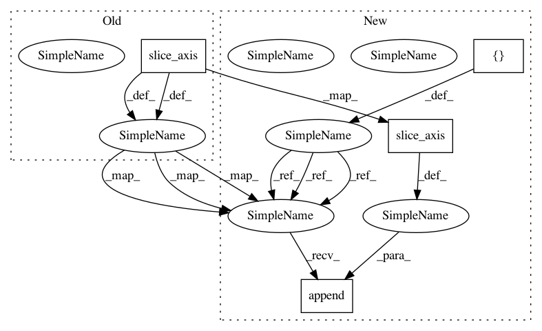

ab97f4c9b035b9a77b3ffd2e7bb460c7f573c3f2,scripts/detection/ssd/train_ssd.py,,validate,#,110
Before Change
// clip to image size
bboxes = bboxes.clip(0, batch[0].shape[2])
// split ground truths
gt_ids = y.slice_axis(axis=-1, begin=4, end=5)
gt_bboxes = y.slice_axis(axis=-1, begin=0, end=4)
gt_difficults = y.slice_axis(axis=-1, begin=5, end=6) if y.shape[-1] > 5 else None
// update metric
eval_metric.update(bboxes, ids, scores, gt_bboxes, gt_ids, gt_difficults)
After Change
det_ids = []
det_scores = []
gt_bboxes = []
gt_ids = []
gt_difficults = []
for x, y in zip(data, label):
// get prediction results
ids, scores, bboxes = net(x)
det_ids.append(ids)
det_scores.append(scores)
// clip to image size
det_bboxes.append(bboxes.clip(0, batch[0].shape[2]))
// split ground truths
gt_ids.append(y.slice_axis(axis=-1, begin=4, end=5))
gt_bboxes.append(y.slice_axis(axis=-1, begin=0, end=4))
gt_difficults.append(y.slice_axis(axis=-1, begin=5, end=6) if y.shape[-1] > 5 else None)
// update metric
In pattern: SUPERPATTERN
Frequency: 4
Non-data size: 4
Instances
Project Name: dmlc/gluon-cv
Commit Name: ab97f4c9b035b9a77b3ffd2e7bb460c7f573c3f2
Time: 2018-05-29
Author: cheungchih@gmail.com
File Name: scripts/detection/ssd/train_ssd.py
Class Name:
Method Name: validate
Project Name: dmlc/gluon-cv
Commit Name: ab97f4c9b035b9a77b3ffd2e7bb460c7f573c3f2
Time: 2018-05-29
Author: cheungchih@gmail.com
File Name: scripts/detection/ssd/train_ssd.py
Class Name:
Method Name: validate
Project Name: dmlc/gluon-cv
Commit Name: ab97f4c9b035b9a77b3ffd2e7bb460c7f573c3f2
Time: 2018-05-29
Author: cheungchih@gmail.com
File Name: scripts/detection/ssd/eval_ssd.py
Class Name:
Method Name: validate